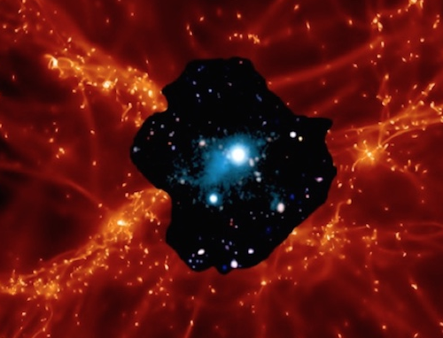

 In our current paradigm of cosmological structure formation, gravitational collapse during the Universe’s first billion years transformed a nearly homogeneous matter distribution into a network of gaseous filaments astronomers call the “Cosmic Web". Galaxy formation occurs within the densest parts of these filamentary structures and galaxy evolution is expected to be sustained and regulated by gas infall from the Cosmic Web or the Intergalactic Medium (IGM).
We study the "Cosmic Web" and associated galaxies both through theoretical/numerical modelling and observations with the most advanced astronomical instruments on 8-10m class telescopes. In particular, we focus on the direct detection and study in absorption and emission of the baryonic component of the "Cosmic Web" - the Intergalactic and Circumgalactic media - in order to unravel the physical properties and the three-dimensional morphology of Cosmic Structures and to address several fundamental questions: